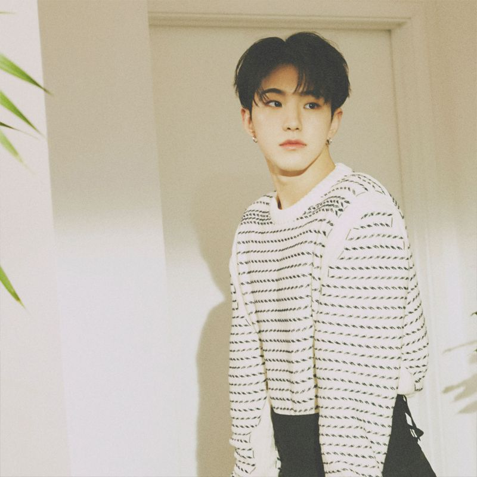

HOSHI

세븐틴의 퍼포먼스팀 리더, 10시 10분 호시입니다!
세븐틴의 안무를 창작하는 안무 수장이자 퍼포먼스팀의 리더를 겸하고 있다.
세븐틴 퍼포먼스의 밑바탕이자 큰 주축. 연습생 시절부터 주도적으로 안무 제작 및 안무 훈련을 리드하는 멤버 중 한명이며, 이 능력을 인정받아 퍼포먼스팀 리더로 데뷔하게 된다. 세븐틴 멤버 중 대부분이 호시에게 기본기를 배웠는데, 워낙 까다롭게 연습시키는 탓에 총괄 리더인 에스쿱스마저도 안무 연습을 할 땐 호시가 두렵다고 말하기도 했다.